Super Artemis — ползунки и разрешение: было и стало
Снимки с Титана: слева настоящая 1.1.0, справа наша сборка из ветки feature/sliders-plus-minus. Пояснения в окнах взяты из Super Artemis как есть; новых строк для перевода нет.
Битрейт видео
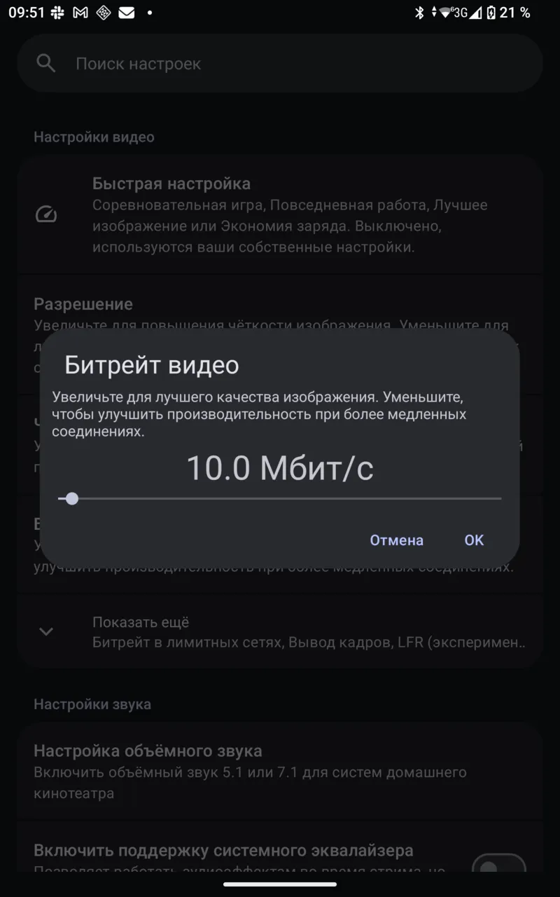
былоЛинейный ползунок 0,5–300 Мбит/с: 3 Мбит/с занимают 1 % его длины; «−», «+» и поля нет.
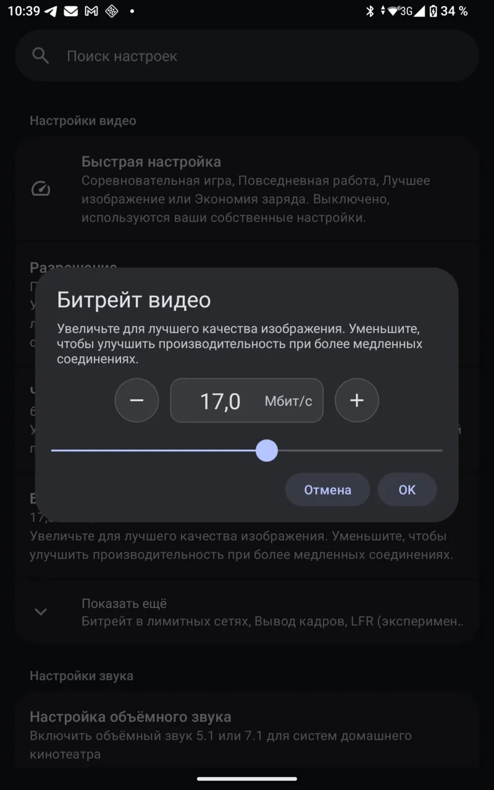
стало«−», поле с числом и «Мбит/с», «+»; логарифмический ползунок, 3 Мбит/с стоят на 28 % длины; шаг кнопок 0,5 до 5 Мбит/с, 1 до 20, 2 до 50, 5 до 100, 10 выше.
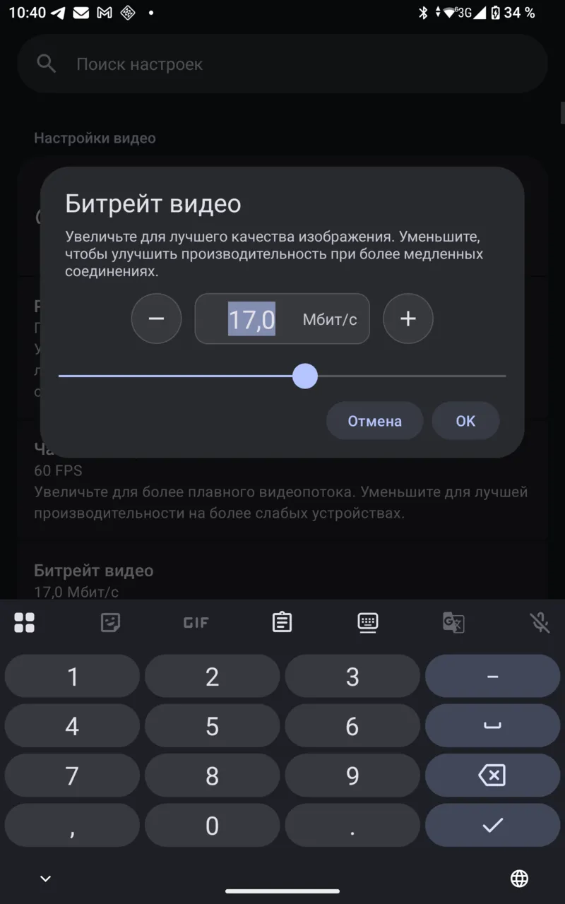
сталоНажатие на число: цифровая клавиатура с «,» и «.»; число выделено, новое вводится сразу, ползунок встаёт сам.
Список настроек
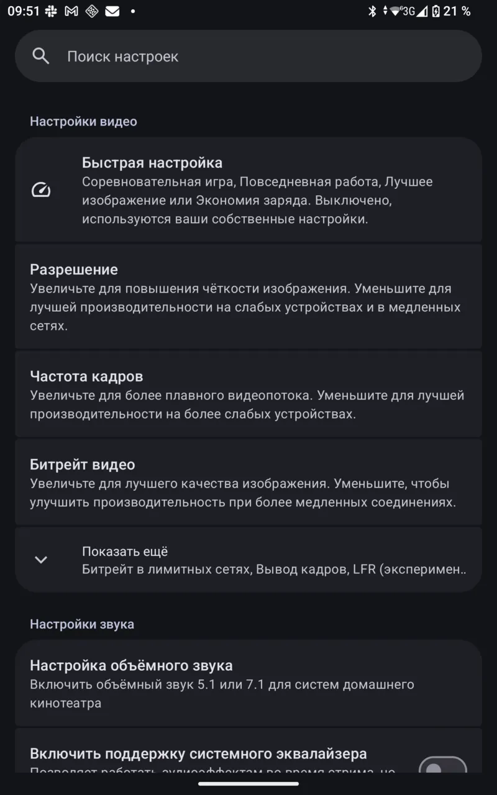
былоПод «Битрейт видео» только пояснение, значение видно лишь в окне.
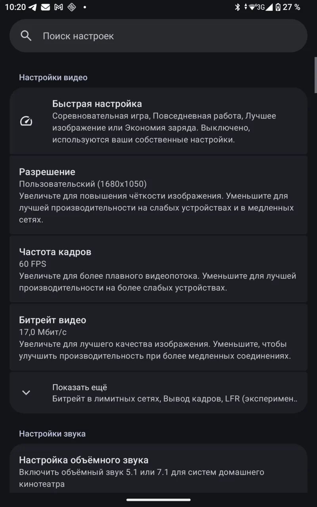
сталоНад пояснением текущее значение: «Пользовательский (1680x1050)», «60 FPS», «17,0 Мбит/с». Так у разрешения, частоты кадров и всех 21 ползунка.
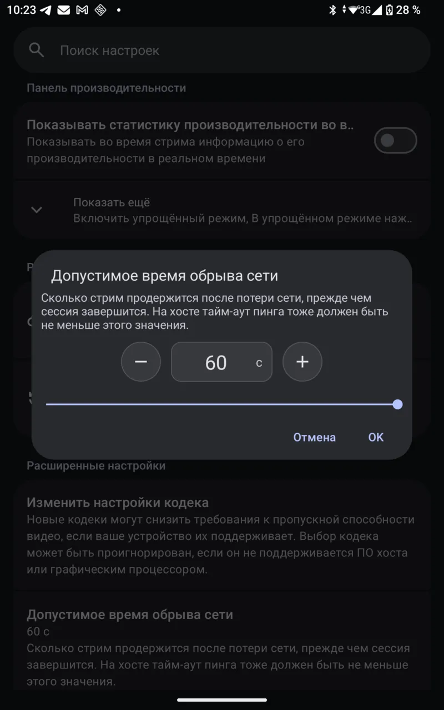
сталоТот же ряд у линейных ползунков: время обрыва сети, шаг 5 с; в списке «60 с».
Разрешение
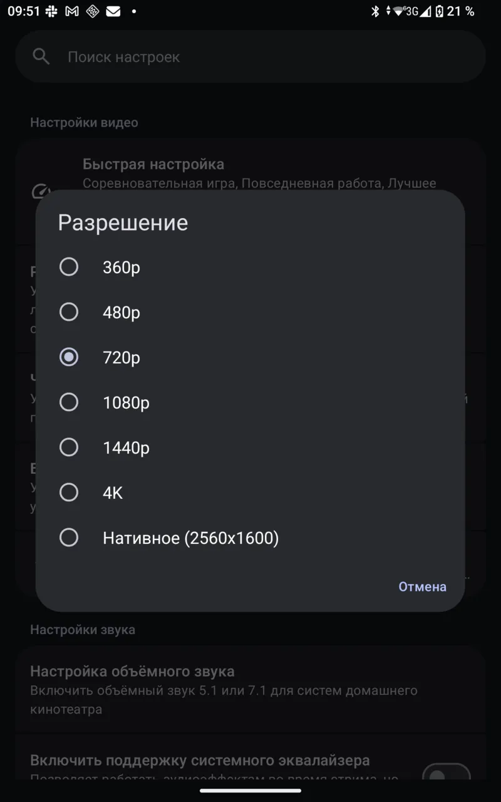
былоСписок: 360p … 4K, «Нативное (2560x1600)».
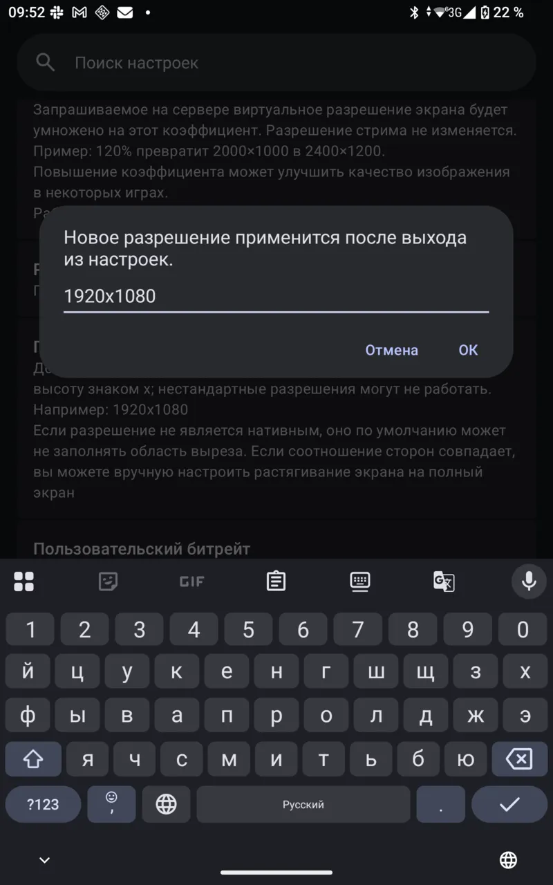
былоСвоё разрешение вводится отдельной строкой: «1920x1080» через латинскую «x» при русской клавиатуре.
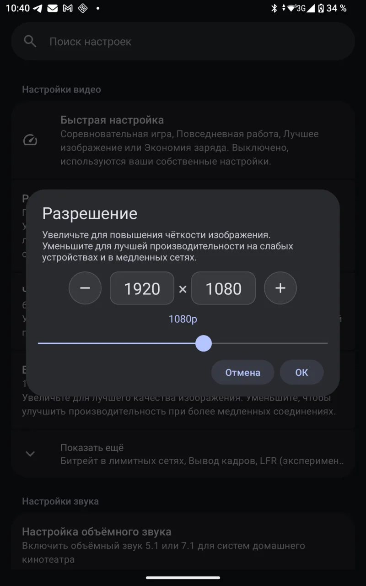
сталоДва поля, неизменный «×», «−» и «+» шагают по списку приложения; под полями имя разрешения; ползунок по тем же пунктам от меньшего к большему.
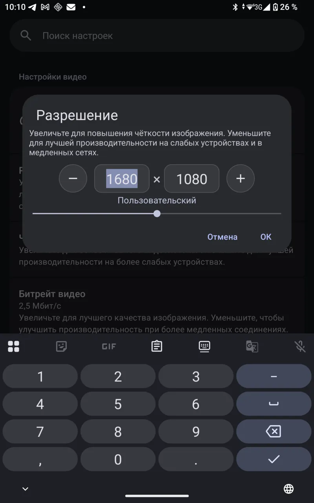
сталоВ полях цифровая клавиатура.
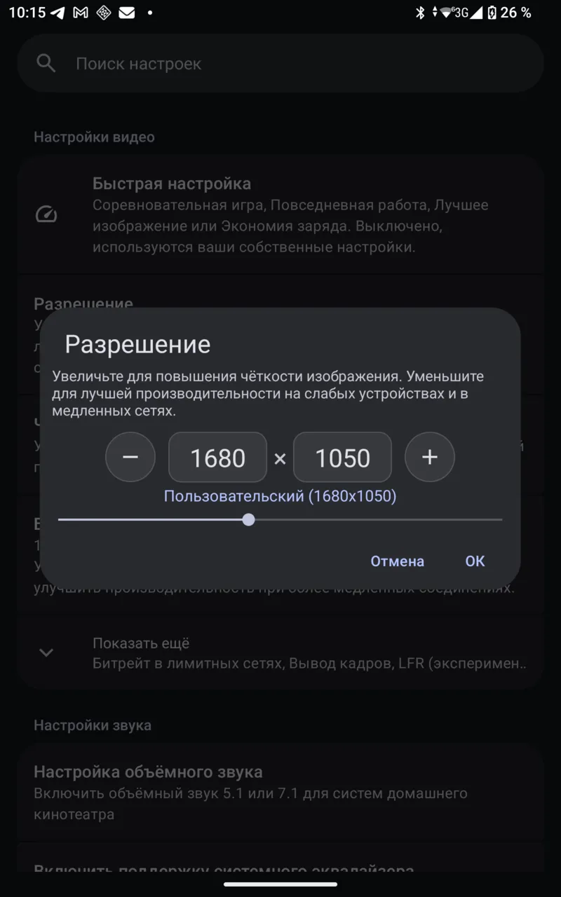
сталоВведённое своё 1680 × 1050 встаёт в список как «Пользовательский (1680x1050)», тем же путём, что и строка «Пользовательское разрешение».